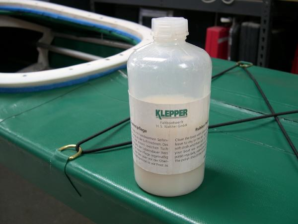

| Maintenance and Repair | Menu Previous Page Next Page |
|  |
Repairing the Skin - To repair a cut or puncture, first clean the area with fresh water (MEK if available) and allow to dry. Make a PVC patch 1/2" to 1" wider on each side than the cut. Apply one unthinned coat of HH-66 to the skin and patch. Wait 2 minutes, and press the patch onto the cut area. If PVC or vinyl cement aren't available, clean and dry the area and make a temporary patch out of duct tape.
Storage - The kayak can be stored assembled or folded. I prefer to keep the kayak assembled at all times except when travelling. This prevents potential creasing of the skin from prolonged storage. If folded for an extended period, fold it as loosely as possible. Always store the skin indoors. Protecting the Skin - The skin should be wiped down with fresh water after use. If cleaning is required, fresh water and a mild soap will suffice. Hose out the inside of the skin periodically, or remove it and wipe it down inside. A sea sock is a good way to protect the inside of the skin while in use. |
|
"Klepper" polish can be used periodically to protect the finish and to restore the glossy look of the PVC. It will need to be removed with MEK in an area requiring a PVC patch..
|
|